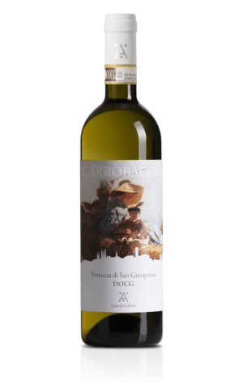

Ryzlink rýnský
Elegantní a minerální výraz s čistou kyselinou. Vůně citrusů, bílých květů a jemné kořenitosti. Víno staví na svěžesti a dlouhém závěru.
- Profil: svěží, minerální, citrus
- Párování: ryby, lehké omáčky, kozí sýr
- Servis: 8–10 °C